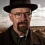

Breaking Bad é uma série de televisão americana criada e produzida por Vince Gilligan. Ela retrata a vida do químico Walter White, um homem brilhante frustrado em dar aulas para adolescentes do ensino médio enquanto lida com um filho sofrendo de paralisia cerebral, uma esposa grávida e dívidas intermináveis. White, então, é diagnosticado com um câncer no pulmão - o que o leva a sofrer um colapso emocional e abraçar uma vida de crimes para pagar suas dívidas hospitalares e dar uma boa vida aos seus filhos. Walter resolve produzir metanfetamina de alta pureza com seu ex-aluno, Jesse Pinkman.
Breaking Bad se passa em Albuquerque, Novo México, e gira em torno das escolhas de seu protagonista, as quais o levam a uma intensa, dolorosa e inevitável transformação. Amplamente considerada como uma das melhores séries da história, ao seu final, foi um dos programas da televisão a cabo mais assistidos nos Estados Unidos, recebendo inúmeros prémios, incluindo dezesseis Primetime Emmy Awards, oito Satellite Awards, dois Globos de Ouro e um Prémio Escolha Popular. Em 2014, entrou para o Livro dos Recordes como o seriado mais bem avaliado de todos os tempos pela crítica.
A série foi originalmente exibida pelo canal de televisão por assinatura AMC, onde estreou no dia 20 de janeiro de 2008 e, depois de cinco temporadas de sucesso, teve seu último episódio transmitido no dia 29 de setembro de 2013. Em Portugal, foi exibida pelos canais SIC Radical, TVséries e MOV. No Brasil, o seriado é exibido pelo canal pago AXN e pelo serviço de streaming Netflix e, na TV aberta, foi exibida pela Rede Record e pela Band.
Desenvolvimento
Conceito
O ator principal, Bryan Cranston, declarou numa entrevista que "o termo 'breaking bad' é uma gíria do Sul que significa que alguém desviou-se do caminho correto e passou a fazer coisas erradas. E isto aplica-se tanto a um dado momento quanto a uma vida inteira."
A rede AMC, que exibiu a série em 20 de Janeiro de 2008, pediu originalmente nove episódios para a primeira temporada (incluindo o episódio piloto), mas a Greve dos Escritores Americanos de 2007-2008 limitou a produção aos sete episódios existentes.
“Eu quero fazer o sincronismo de cor para cada um desses episódios em que você se senta com o colorista e certifica-se de que a cor de cada cena individual é exatamente da maneira que você queria.”
—— Vince Gilligan, em entrevista para IndieWire, julho de 2012
Breaking Bad foi criado por Vince Gilligan, que, por vários anos, foi roteirista da série The X-Files. Gilligan queria criar uma série em que o protagonista torna-se o antagonista. "A televisão é historicamente boa em manter seus personagens em uma estase auto-imposto de modo que shows podem durar anos ou mesmo décadas", disse ele. "Quando percebi isso, o próximo passo lógico era pensar, como posso fazer um show em que a unidade fundamental é para a mudança?" Ele acrescentou que seu objetivo com Walter White foi para transformá-lo de Sr. Chips para Scarface.
Antes de ser adquirida pela AMC, Breaking Bad foi oferecida a outros canais americanos, como TNT, Showtime e FX. A série foi rejeitada até pela HBO, recusa que chamou a atenção pelo desprezo durante a apresentação (Pitch) feita por Vince Gilligan. Segundo ele, a executiva do canal e os subordinados dela presentes na reunião foram rudes e não prestaram atenção na apresentação. “A executiva que me atendeu não poderia ter mostrado menos interesse. Era palpável sentir o quanto estavam desinteressados”, relembrou.
Desenvolvimento da história
A rede encomendou nove episódios para a primeira temporada (incluindo o piloto), mas em 2007-08 a Writers Guild of America limitou a produção de sete episódios. As versões iniciais do roteiro foram fixadas em Riverside, Califórnia, mas por sugestão da Sony, Albuquerque foi escolhida para a localização da produção devido às condições financeiras favoráveis oferecidos pelo estado do Novo México. Uma vez que Gilligan reconheceu que isso significaria "que sempre teria que estar evitando as montanhas de Sandia" em cenas voltadas para o leste, a definição da história foi mudada para o local de produção real.
Filmagens
A maior parte das filmagens foi feita com película de 35 milímetros, com câmeras digitais utilizadas conforme necessário para ângulos adicionais da fotografia. Breaking Bad custou US$ 1.5 milhões por episódio para produção, mais elevado do que o custo médio para um programa básico de cabo.
Finalização
Em Julho de 2011, Vince Gilligan indicou que tinha a intenção de concluir Breaking Bad, no final de sua quinta temporada. No início de Agosto de 2011, as negociações começaram sobre um acordo a respeito da quinta e última temporada possível entre a rede AMC e Sony Pictures Television, a empresa de produção da série. AMC tinha proposto uma quinta temporada mais curta (de seis a oito episódios, em vez de 13) para cortar custos, mas os produtores diminuíram. A Sony, em seguida, aproximou-se de outras redes de cabo sobre a possibilidade de pegar o show, se um acordo não ocorresse. Em 14 de Agosto de 2011, a AMC renovou a série para quinta e última temporada composta por 16 episódios. Devido a popularidade global, o criador Vince Gilligan agradeceu ao Netflix e o Emmy Awards em Setembro de 2013. Chegando ao ponto de dizer que a Netflix "nos manteve no ar".
Exatidão Científica
Donna Nelson, professora de química orgânica na universidade de Oklahoma, fez todas as verificações no roteiro. Ela também olhou as estruturas químicas e escreveu as equações que foram usadas como adereços. De acordo com o criador Vince Gilligan, a Drª. Donna Nelson os abordou nas primeiras temporadas da série e disse: "Eu realmente gosto deste show, e se você precisar de ajuda com a química, eu adoraria dar uma mão." "Ela tem sido uma conselheira maravilhosa. Nós obtemos ajuda sempre que precisamos dela, se é química, engenharia elétrica ou física. Tentamos ter tudo correto. Não há o tempo inteiro [um conselheiro] no set, mas corremos em certas cenas para esses especialistas em primeiro lugar."
"[Porque] Walter White estava falando com seus alunos, eu era capaz de retirar certos momentos da descrição e diálogo no início dos episódios que me mantiveram até que tivemos ajuda de alguns químicos honesto-a-Deus", diz Gilligan. De acordo com o diretor, "Nelson, o veterinário de nosso roteiro estava para garantir que o diálogo químico fosse preciso e atualizado. Temos também um químico da Drug Enforcement Administration sediada em Dallas, que acaba de ser extremamente útil para nós." Nelson falou do interesse de Gilligan em estar correto em ciência: "[Ele] disse que fez a diferença para ele."
Em 2013, duas cenas da primeira temporada de Breaking Bad foram colocados sob controle de Mythbusters Breaking Bad Special. Apesar de várias modificações que foram vistas no show, ambas as cenas foram consideradas mito" (ou seja, as cenas descritas no show foram consideradas impossíveis de acontecer na vida real).
Elenco Principal

| Ator | Personagem | Foto |
|---|---|---|
| Bryan Cranston | Walter White |  |
| Anna Gunn | Skyler White |
.jfif)
|
| Aaron Paul | Jesse Pinkman |
.jfif)
|
| Dean Norris | Hank Schrader |
.jfif)
|
| Betsy Brandt | Marie Schrader |
.jfif)
|
| RJ Mitte | Walter White Junior |
.jfif)
|
| Jonathan Banks | Mike Ehrmantraut |
.jfif)
|
| Bob Odenkirk | Saul Goodman |
.jfif)
|
| Giancarlo Esposito | Gustavo "Gus" Fring |
.jfif)
|
Premiações e Nomeações
A série já ganhou inúmeros prémios e indicações, incluindo dez Primetime Emmy Awards com um para Melhor Série Dramática.
Por sua interpretação de Walter White, Bryan Cranston ganhou o Primetime Emmy Award de Melhor Ator em Série Dramática três anos consecutivos em 2008, 2009, 2010 e 2014. Cranston também ganhou o prémio TCA de Realização Individual em Drama em 2009 e o Satellite Award de Melhor Ator - Série de TV: Drama em 2008, 2009 e 2010, bem como o Prémio Escolha dos Críticos de Televisão de Melhor Ator em Série de Drama e o Saturn Award de Melhor Ator de Televisão em 2012.
Aaron Paul ganhou o Primetime Emmy Award de Melhor Ator Coadjuvante em Série Dramática em 2010, 2012 e 2014. Paul também ganhou o Saturn Award de Melhor Ator Coadjuvante na televisão em 2010 e 2012.
Anna Gunn ganhou o Primetime Emmy Award para Melhor Atriz Coadjuvante em Série Dramática em 2013 e 2014.
Por seu trabalho na quarta temporada, Giancarlo Esposito venceu o Prémio Escolha dos Críticos de Televisão de Melhor Ator Coadjuvante em Série de Drama.
Em 2010 e 2012, Breaking Bad ganhou o prémio TCA de Excelência em Drama, bem como o prémio TCA para o Programa do Ano em 2013. Em 2009 e 2010, a série ganhou o Satellite Award para Melhor Série de Televisão - Drama, juntamente com o Saturn Award de Melhor Série de Televisão por Cabo sindicalizado em 2010, 2011 e 2012. A série ganhou o Writers Guild of America Award para Televisão: Série Dramática. tanto em 2012 e 2013. Em 2013, foi nomeado nº. 13 na lista dos 101 mais bem escrito séries de TV de todos os tempos pelo Writers Guild da América e venceu, pela primeira vez, o Primetime Emmy Award para Melhor Série Dramática. No geral, o show ganhou 45 prémios da indústria e foi nomeado para 113. Em 2014, Bryan Cranston, Aaron Paul e Anna Gunn ganharam o Primetime Emmy Award por melhor ator, melhor ator e atriz coadjuvantes em serie dramática.
Elementos químicos nos créditos
Os créditos apresentam símbolos de elementos químicos da Tabela Periódica em verde (por exemplo: os símbolos Br e Ba de bromo e bário em Breaking Bad). Os créditos no começo do show geralmente dão seguimento a esta tendência, com os nomes dos atores geralmente incluindo um símbolo de elemento químico se apropriado.
Os créditos de abertura também exibem a fórmula C10H15N que se repete várias vezes em cada quadro em que ela aparece. Esta é a fórmula molecular da metanfetamina, que indica que cada molécula contém 10 átomos de carbono, 15 átomos de hidrogênio e um átomo de nitrogênio.
O número 149,24, que também se repete durante a introdução, representa a massa molar do composto metanfetamina.
Mídias

Filme
Em 2019, foi anunciado que um longa metragem baseado na série seria desenvolvido, e que os assinantes da Netflix, teriam prioridade para assistir ao filme. De acordo com o que foi noticiado na época, a Netflix e o canal AMC, compartilhou os direitos de exibição do seriado. O filme "El Camino: A Breaking Bad Film" entrou no catálogo da Netflix em 11 de Outubro de 2019.
Trailer Oficial do filme "El Camino: A Breaking Bad Movie"
Ligações Externas
- Breaking Bad na Netflix
- Breaking Bad no IMDB
- Breaking Bad no Metacritic